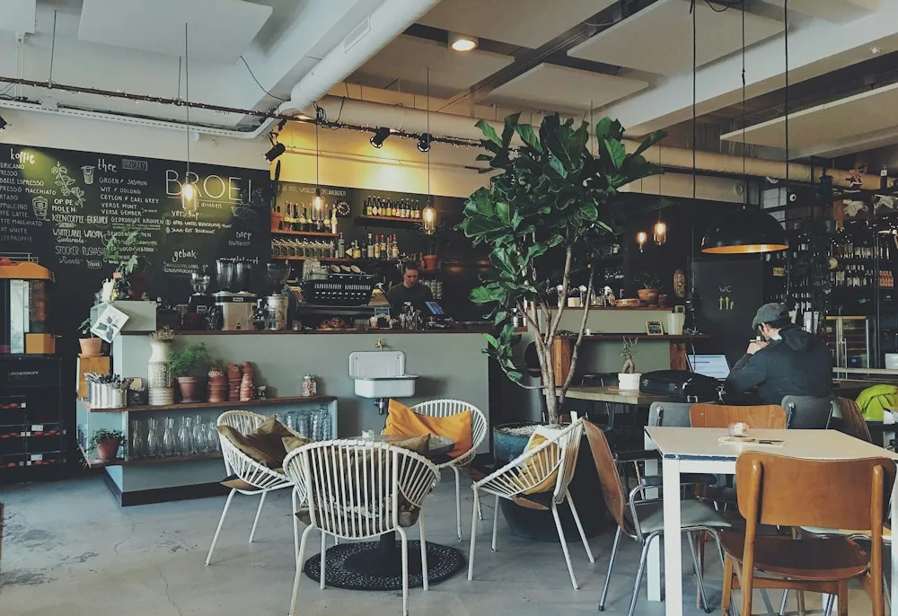

Можно с ноутбуком?
Да, у нас есть Wi-Fi. Устраивайтесь поудобнее и работайте в своём ритме.
МЫ ГДЕ-ТО РЯДОМ
Для хорошего кофе
особый повод не нужен.
г. Казань, ул. Уютная, 12
Учебный адрес — кофейня вымышленная.Пн — Пт 08:00 — 21:00
Сб — Вс 09:00 — 22:00
ПРЕДСТАВЬТЕ СВОЙ ВИЗИТ
Идея атмосферы будущей кофейни.
Фотографии-примеры из Unsplash. Они не изображают нашу вымышленную кофейню и её настоящий вход.


ПЕРЕД ВИЗИТОМ
Да, у нас есть Wi-Fi. Устраивайтесь поудобнее и работайте в своём ритме.
Конечно. Будем рады вам и вашему четвероногому другу.
Приготовим любой напиток навынос. Выпечку тоже можно взять с собой.